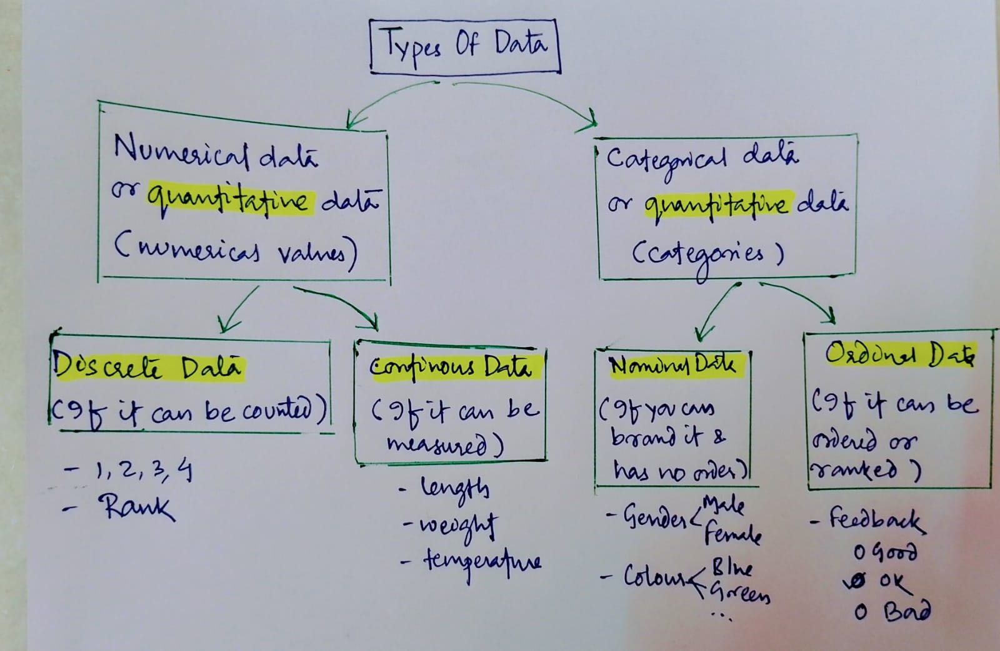
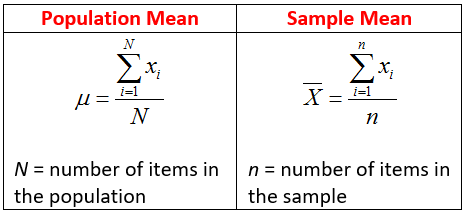
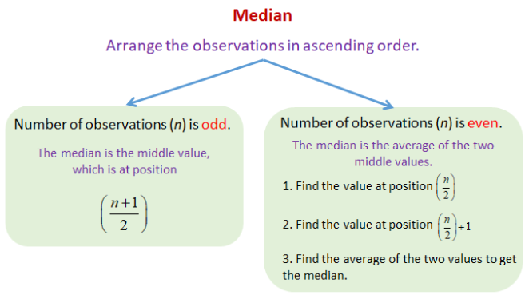
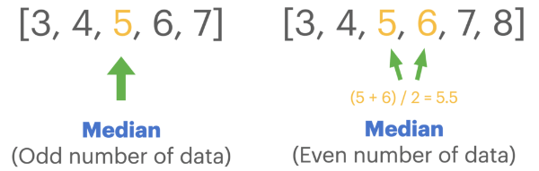
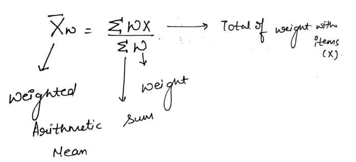
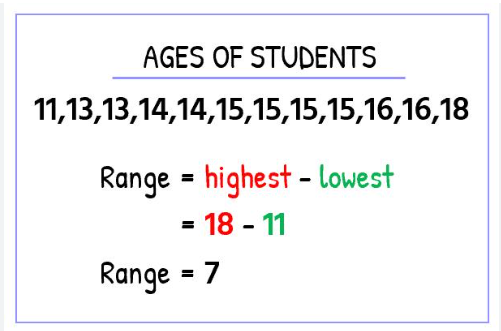
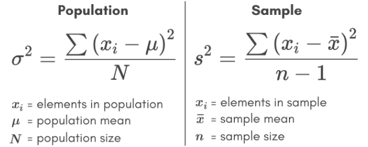
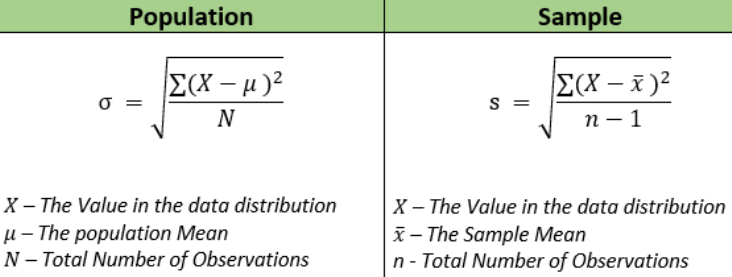
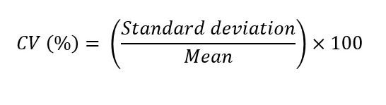

Types of Data
- In tabular data every column will have a type. By type one means the characterstic of the data
- Data can be broadly be of two types:
- Quantitaive Data - These are numerical values (ex:1,2,3,1.56...)
- This can be of two types
- Discrete Data - These can be counted and occurs at intervals(ex:1,2,3,4)
- Continuous Data - These can be measured (ex: 1,1.1,1.2,1.3..)
- Qualitative Data - These are categorical values (ex: blue, yellow, far, near)
- This can be of two types
- Nominal Data - It has no order (ex: Gender)
- Ordinal Data - It has order (ex: feedback - we can order between feedbacks)
- Below is a visual representation of the same

- Note: There is a typo for Categorical data box. It is qualitative data & not quantitaivie
Measure of Central Tendency
- It is a statistical measure that represents the central value for a dataset. It gives a single value that is most representative of the dataset as a whole
- There are mainly three types of central tendency measurements
- Now lets try to understand each of them
Mean
- Mean is the sum of all values in a dataset divided by the number of values
- This is also known as average
- When we find out the mean of population it is called as population mean and when we find the mean of a sample it's called a sample mean
- Disadvantage of using mean: It is affected by outliers. If there is a big outlier the mean tends to shift towards the outlier not giving a right central value

- Median is the middle value in the dataset when the data is arranged in order
- Advantage of using medain: It is not affected by outliers as in mean. Because of the ordering the outliers doesn't shift the medain towards it.

- Examples of median

Mode
- Mode is the value that appears most frequently in the dataset
- It is mostly used for categorical values to tell which one is most frequent
Weighted Mean
- Weighted Mean is the sum of the products of each value and its weigh, divided by the sum of weights
- It is used to calculate mean when the values in the dataset have different importance of frequency

Measure of Dispersion
- It is a statistical measure that describes the spread or variability of the data.
- It provides information about how the data is distributed around the central tendency of the dataset
- Mean alone is not enough to describe the data. We also need to know the distribution of the data
Range
- Range is difference between maximum and minimum value in a dataset
- Disadvantage of using range: It is prone to outliers as it depends on max and min value. So,it is mostly not used

Variance
- It is the average of the squared differences between each data point and the mean
- It measures the average distance of each data point from the mean and is useful in comparing the dispersion of datasets with different mean
- Disadvantage of using variance: It shows just the proportion of spread and not the exact spread

Standard Deviation
- It is the square root of variance
- Widely used measure for deviation
- Adv of using standard deviation: The unit of this is same as that of the data whereas variance gives a value square of the data

Coefficient of Variation
- It is the ratio of the standard deviation to the mean expressed as a percentage
- Used to compare variability of datasets with different means
- It is a statistical measure that expresses the amount of variability in a dataset relative to the mean.It is a dimensionless quantity expressed in percentage

TL;DR
- Lets quickly go over the key takeaways from this section:
- There are basically two types of data - Quantitaive & Qualitative
- Quantitaive can be further segregated to discrete or continous
- Qualitative can be further segregated to nominal or ordinal
- There are three ways to measure central tendency - mean (prone to outliers), median(not prone to outliers), mode(used for categorical data)
- DIsperson can be measured using - range,variance, standard deviation, coefficient of variation